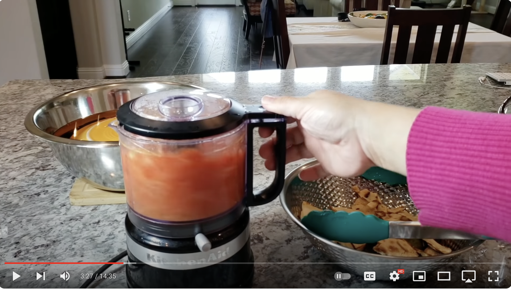
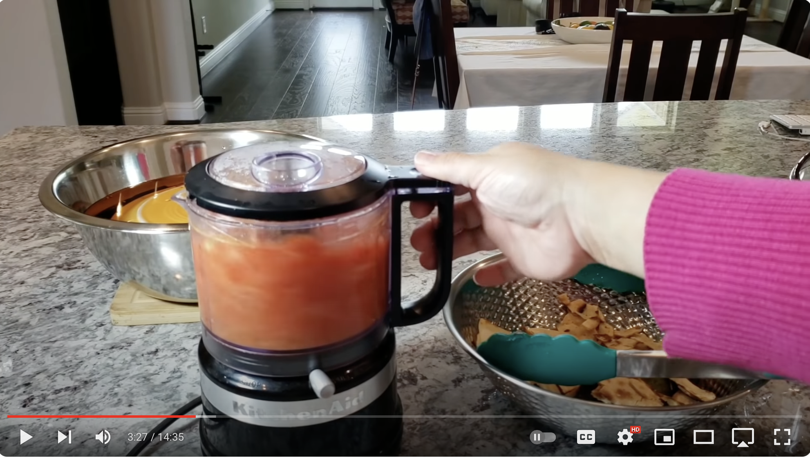

MEXICAN CUISINE
The Top Recipes: A selection by Chef Matthew Diaz
The Authentic Mole Sauce

This authentic mole sauce is made with hot chiles, rich chocolate, spices, and tomatillos for a delicious topping on enchiladas and stewed meats.
For hands free referencing, the Chef has included this video:
 

To start, ensure you have the following ingredients:
- Chiles (chipotle, guajillo, and ancho)
- Chicken broth
- Dinner roll and corn tortilla
- Tomatillos and tomatoes
- Lard
- Onion and Garlic
- Peanuts
- Raisins
- Spices (cumin seeds, dried thyme, allspice berries, whole cloves, and cinnamon sticks)
- Dark Chocolate
- White Sugar
- Salt
With all of these ingredients gathered, we can now start preparing the meal
- Toast the chiles and put them in a blender.
- Simmer the broth and pour it into the blender.
- Toast the roll and tortilla, then transfer to the blender.
- Allow the ingredients to soak in broth, then blend.
- Cook the tomatoes and tomatillos, then transfer them to the blender.
- Cook the onion, garlic, peanuts, raisins, and spices in lard, then transfer to the blender.
- Blend until smooth and pour the mixture into a saucepan.
- Stir in the remaining broth, chocolate, sugar, and salt. Simmer until thickened.
How to use Mole Sauce

Mole sauce is often served with chicken, but its quite versatile. Spoon it over enchiladas, tacos, nachos, and so much more. For delicious inspiration, explore our entire collection of Mexican Recipes.